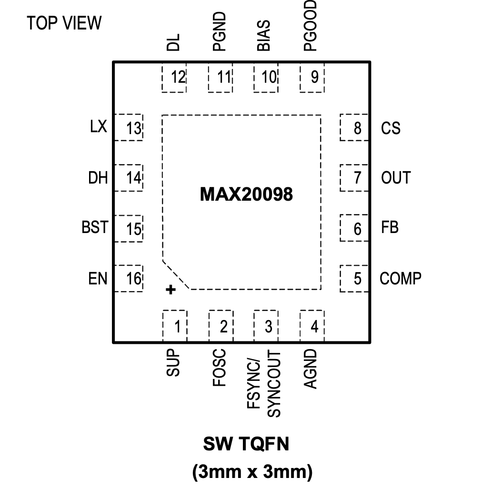

MAX20098

Pin Description
| PIN | NAME | FUNCTION |
|---|---|---|
| 1 | SUP | Supply Input. Bypass SUP with enough capacitors to minimize input ripple. |
| 2 | FOSC | Frequency-Setting Input. Connect a resistor to FOSC to set the switching frequency of the DC-DC controller. |
| 3 | FSYNC/SYNCOUT | External Clock-Synchronization Input. Synchronization to the controller operating-frequency ratio is 1. See the Electrical Characteristics table for frequency range and the Switching Frequency/ External Synchronization section for additional information. Connect FSYNC to AGND to enable skip mode of operation. Connect to BIAS or an external clock to enable forced-PWM mode of operation. Factory option allows synchronous output to allow controllers to operate in parallel. |
| 4 | AGND | Signal Ground for the IC |
| 5 | COMP | Buck Controller Error-Amplifier Output. Connect an RC network to COMP to compensate the buck controller. |
| 6 | FB | Feedback Input for Buck Controller. Connect FB to BIAS for the fixed output, or to a resistive divider between OUT and AGND to adjust the output voltage between 1V and 10V. In adjustable mode, FB regulates to 1V (typ). See the Setting the Output Voltage section. |
| 7 | OUT | Output Sense and Negative Current-Sense Input for Buck Controller. When using the internal preset feedback-divider (FB = BIAS), the controller uses OUT to sense the output voltage. Connect OUT to the negative terminal of the current-sense element. See the Current Limiting and Current- Sense Inputs (OUT and CS) and Current-Sense Measurement sections. |
| 8 | CS | Positive Current-Sense Input for Buck Controller. Connect CS to the positive terminal of the current sense element. See the Current Limiting and Current-Sense Inputs (OUT and CS) and Current- Sense Measurement sections. |
| 9 | PGOOD | Open-Drain Power-Good Output for Buck Controller. PGOOD is low if OUT is more than 7% (typ) below the normal regulation point. PGOOD asserts low during soft-start and in shutdown. PGOOD becomes high impedance when OUT is in regulation. To obtain a logic signal, pull up PGOOD with an external resistor connected to a positive voltage lower than 5.5V. |
| 10 | BIAS | 5V Internal Linear Regulator Output. Bypass BIAS to GND with a low-ESR ceramic capacitor of 2.2μF minimum value. BIAS provides the power to the internal circuitry and external loads. See the Fixed 5V Linear Regulator (BIAS) section. |
| 11 | PGND | Power Ground for the Controller |
| 12 | DL | Low-Side Gate-Driver Output. DL output voltage swings from VPGND to VBIAS. |
| 13 | LX | Inductor Connection. Connect LX to the switched side of the inductor. LX serves as the lower supply rail for the DH high-side gate driver. |
| 14 | DH | High-Side Gate-Driver Output. DH output voltage swings from VLX to VBST. |
| 15 | BST | Boost Flying-Capacitor Connection. Connect a ceramic capacitor between BST and LX. See the High-Side Gate-Driver Supply (BST) section. When the switching frequency is greater than 1MHz, connect a high-voltage Schottky diode between BIAS and BST. |
| 16 | EN | High-Voltage Tolerant, Active-High Digital-Enable Input for the Controller |
| EP | - | Exposed Pad. Connect the exposed pad to ground. Connecting the exposed pad to ground does not remove the requirement for proper ground connections to PGND and AGND. The exposed pad is attached with epoxy to the substrate of the die, making it an excellent path to remove heat from the IC. |